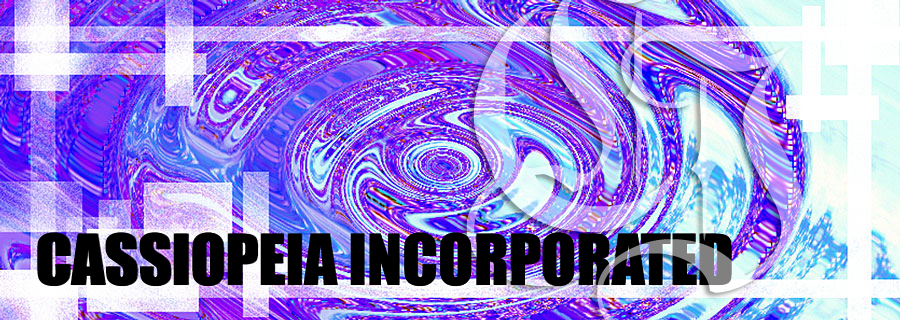

..:: Main ::.
..:: Meet the Team ::.
.:: Our Budget ::.
.:: Hiring ::..
..:: About Cassiopeia Incorporated ::..
Welcome to Cassiopeia Incorporated Online! We thank you for showing your interest in our company by visiting
our site online! Though our company is fairly small at the moment, we hope to become very successful in selling the items
we produce. Cassiopeia Incorporated has started out, and is still to this day, a clothing and accessory store focused on
young adult females. All of our products are custom designed, so it is always original a part from other clothing/accessory
stores. If that is not enough, we always have low prices as to make it affordable for those young adults to purchase!
Cassiopeia Incorporated was founded by a local Californian designer, Jinjoo "Pearl" Kim, who had hoped to create
a store/ company that allowed girls, who weren't from wealthy families, to still look trendy and in-style without having
to spend a lot of money. She called it "Cassiopeia", because it was her dear hope that this store would flourish and it would
expand and become as numerous as the stars like in "Cassiopeia". The first store was opened on January 26th, 1982 on the streets of
Los Angelos, California. She started with only three employees besides herself. The store was not an immediate hit, but has attained
more renown as time passed on. It wasn't until the late 1980s, that more and more young adults began to recognize and regularly attend
to this store.
With the passing of Ms.Jinjoo "Pearl" Kim on November 7th, 1989, Patty Shin, bought the small company and is now the
sole owner of it. It is our goal to achieve Ms. Jinjoo "Pearl" Kim's dream to expand the stores than are now under the current company
name, "Cassiopeia Incorporated". Cassiopeia Incorporated's base is in Los Angelos, California, but we have recently opened a store in
New York City, New York. We currently have ten employees and four executive personnel over the span of these two locations. Please
visit any of our two locations if you would like more information about our company.